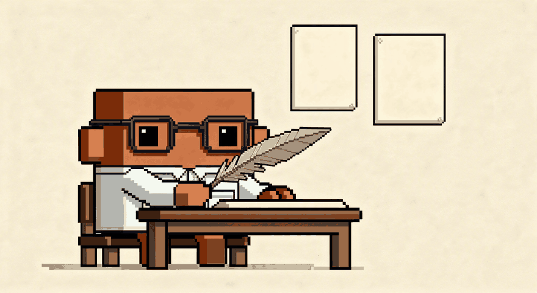
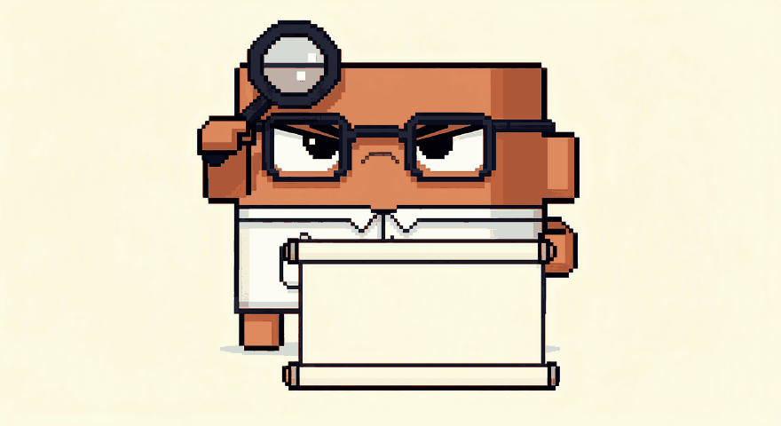
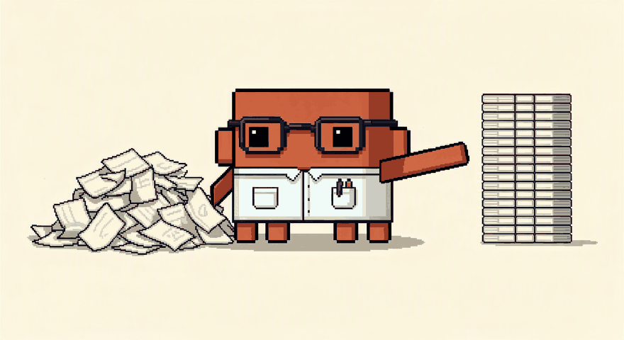

Skills abiertas
Skills de Claude que puedes instalar hoy
Abiertas y gratuitas. Te las descargas, las metes en tu Claude y funcionan. Si mejoras alguna, mándamela y la publico con tu nombre.
Skill · Abierta

Escribe como yo
Le enseña tu voz a partir de tres textos tuyos antes de escribir una sola línea. El método del carrusel, empaquetado.
Skill · Abierta

Interroga mis documentos
Lee un PDF largo como si tuviera que defenderlo mañana: contradicciones, huecos y las preguntas incómodas.
Skill · Abierta

De reunión a tareas
Convierte notas sueltas en decisiones y tareas con responsable y fecha. Lo que quedó sin decidir, aparte.